- Generated by
 1.9.1
1.9.1
|
ERF
Energy Research and Forecasting: An Atmospheric Modeling Code
|
Classes | |
| struct | RayMap |
Enumerations | |
| enum | RayHit : int { RAY_SKY = 0 , RAY_GROUND = 1 , RAY_BUILDING = 2 } |
| What a ray from a face ends on. More... | |
Functions | |
| AMREX_GPU_HOST_DEVICE AMREX_FORCE_INLINE amrex::Real | solve_skin_balance (amrex::Real T_start, amrex::Real SW_abs, amrex::Real Q_abs, amrex::Real LW_ext, amrex::Real emis, amrex::Real f_bldg, amrex::Real C_H, amrex::Real exner, amrex::Real theta_air, amrex::Real LE, amrex::Real slab_a, amrex::Real slab_b, amrex::Real T_min, amrex::Real T_max, amrex::Real max_step, amrex::Real tol, int max_iter, int &n_iter, amrex::Real &resid) |
| AMREX_GPU_HOST_DEVICE AMREX_FORCE_INLINE amrex::Real | advance_slab_dirichlet (amrex::Real *T, amrex::Real T_skin, amrex::Real T_int, amrex::Real k, amrex::Real rho_cp, amrex::Real dz, amrex::Real dt, int N) |
| AMREX_GPU_HOST_DEVICE AMREX_FORCE_INLINE void | slab_skin_response (const amrex::Real *T, amrex::Real T_int, amrex::Real k, amrex::Real rho_cp, amrex::Real dz, amrex::Real dt, int N, amrex::Real &a, amrex::Real &b) |
| AMREX_GPU_HOST_DEVICE AMREX_FORCE_INLINE amrex::Real | spencer_day_angle (amrex::Real day_of_year) |
| AMREX_GPU_HOST_DEVICE AMREX_FORCE_INLINE amrex::Real | day_of_year_at (amrex::Real day0, amrex::Real t_utc_s) |
| AMREX_GPU_HOST_DEVICE AMREX_FORCE_INLINE amrex::Real | solar_declination (amrex::Real day_of_year) |
| AMREX_GPU_HOST_DEVICE AMREX_FORCE_INLINE amrex::Real | equation_of_time (amrex::Real day_of_year) |
| AMREX_GPU_HOST_DEVICE AMREX_FORCE_INLINE amrex::Real | solar_hour_angle (amrex::Real time_utc_s, amrex::Real longitude_deg, amrex::Real day_of_year) |
| AMREX_GPU_HOST_DEVICE AMREX_FORCE_INLINE amrex::Real | orbital_hour_angle (double calday, amrex::Real longitude_rad) |
| AMREX_GPU_HOST_DEVICE AMREX_FORCE_INLINE amrex::Real | solar_zenith (amrex::Real latitude_deg, amrex::Real decl, amrex::Real hour_angle) |
| AMREX_GPU_HOST_DEVICE AMREX_FORCE_INLINE amrex::Real | solar_azimuth (amrex::Real latitude_deg, amrex::Real decl, amrex::Real hour_angle, amrex::Real zenith) |
| AMREX_GPU_HOST_DEVICE AMREX_FORCE_INLINE amrex::Real | earth_sun_distance_factor (amrex::Real day_of_year) |
| AMREX_GPU_HOST_DEVICE AMREX_FORCE_INLINE void | sun_vector (amrex::Real zenith, amrex::Real azimuth, amrex::Real &sx, amrex::Real &sy, amrex::Real &sz) |
| AMREX_GPU_HOST_DEVICE AMREX_FORCE_INLINE amrex::Real | clear_sky_dni (amrex::Real cos_zenith, amrex::Real S0, amrex::Real tau, amrex::Real distance_factor) |
| AMREX_GPU_HOST_DEVICE AMREX_FORCE_INLINE amrex::Real | clear_sky_diffuse_h (amrex::Real cos_zenith, amrex::Real S0, amrex::Real tau, amrex::Real distance_factor, amrex::Real k_d) |
| int | ray_halo_cells (amrex::Real height, amrex::Real dx, amrex::Real sz_min) |
| amrex::Real | hemisphere_min_sz (int n_az, int n_el) |
| AMREX_GPU_HOST_DEVICE AMREX_FORCE_INLINE bool | ray_blocked (amrex::Real x0, amrex::Real y0, amrex::Real z0, amrex::Real sx, amrex::Real sy, amrex::Real sz, const RayMap &m) |
| AMREX_GPU_HOST_DEVICE AMREX_FORCE_INLINE int | ray_hit (amrex::Real x0, amrex::Real y0, amrex::Real z0, amrex::Real sx, amrex::Real sy, amrex::Real sz, const RayMap &m) |
| AMREX_GPU_HOST_DEVICE AMREX_FORCE_INLINE void | hemisphere_direction (int dir, int nsign, int ia, int ie, int n_az, int n_el, amrex::Real &sx, amrex::Real &sy, amrex::Real &sz) |
Variables | |
| constexpr amrex::Real | SIGMA_SB = 5.670374419e-8 |
| Stefan-Boltzmann constant [W/m2/K4]. More... | |
| constexpr int | SLAB_MAX_LAYERS = 32 |
| enum ibseb::RayHit : int |
| AMREX_GPU_HOST_DEVICE AMREX_FORCE_INLINE amrex::Real ibseb::advance_slab_dirichlet | ( | amrex::Real * | T, |
| amrex::Real | T_skin, | ||
| amrex::Real | T_int, | ||
| amrex::Real | k, | ||
| amrex::Real | rho_cp, | ||
| amrex::Real | dz, | ||
| amrex::Real | dt, | ||
| int | N | ||
| ) |
Advance one slab column by one step and return the conduction into it.
Solves, for layers l = 0 .. N-1 with implicit Euler, rho_cp dz (T_l^{n+1} - T_l^n) / dt = flux_in - flux_out, the fluxes between neighbouring centres being k (T_{l-1} - T_l) / dz, the flux from the skin 2 k (T_skin - T_0) / dz and the flux to the interior 2 k (T_{N-1} - T_int) / dz. Unconditionally stable.
| [in,out] | T | Layer temperatures [K], N values, top first. |
| [in] | T_skin | Skin temperature at the top [K] (Dirichlet). |
| [in] | T_int | Interior temperature at the bottom [K] (Dirichlet). |
| [in] | k | Thermal conductivity [W/m/K]. |
| [in] | rho_cp | Volumetric heat capacity [J/m3/K]. |
| [in] | dz | Layer thickness [m]. |
| [in] | dt | Time step [s]. |
| [in] | N | Number of layers, at most SLAB_MAX_LAYERS. |
2 k (T_skin - T_0^{n+1}) / dz [W/m2], positive into the slab. Referenced by IBFaceSet::compute_ground(), slab_skin_response(), and IBFaceSet::solve_balance().
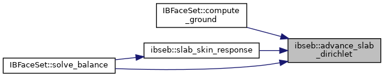
| AMREX_GPU_HOST_DEVICE AMREX_FORCE_INLINE amrex::Real ibseb::clear_sky_diffuse_h | ( | amrex::Real | cos_zenith, |
| amrex::Real | S0, | ||
| amrex::Real | tau, | ||
| amrex::Real | distance_factor, | ||
| amrex::Real | k_d | ||
| ) |
Clear-sky diffuse irradiance on a horizontal surface [W/m2]: a fraction k_d of what the direct beam lost to the atmosphere reaches the ground as diffuse light (Liu and Jordan form).
Referenced by IBFaceSet::compute_shortwave().
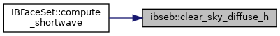
| AMREX_GPU_HOST_DEVICE AMREX_FORCE_INLINE amrex::Real ibseb::clear_sky_dni | ( | amrex::Real | cos_zenith, |
| amrex::Real | S0, | ||
| amrex::Real | tau, | ||
| amrex::Real | distance_factor | ||
| ) |
Clear-sky direct-normal irradiance [W/m2] (Bird form): the solar constant, corrected for the Earth-Sun distance, attenuated by tau^(1/cos z). Zero when the sun is below the horizon.
Referenced by IBFaceSet::compute_shortwave().
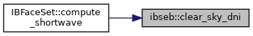
| AMREX_GPU_HOST_DEVICE AMREX_FORCE_INLINE amrex::Real ibseb::day_of_year_at | ( | amrex::Real | day0, |
| amrex::Real | t_utc_s | ||
| ) |
Day of year at a UTC time: the start day plus the whole days elapsed since 00:00 UTC of that day (t_utc_s may exceed 86400 s in a multi-day run). The Spencer series repeat every 365 days, so the result needs no wrapping.
Referenced by IBFaceSet::compute_shortwave().
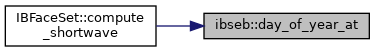
| AMREX_GPU_HOST_DEVICE AMREX_FORCE_INLINE amrex::Real ibseb::earth_sun_distance_factor | ( | amrex::Real | day_of_year | ) |
Earth-Sun distance factor (d0/d)^2 that scales the solar constant for the day of year (Spencer 1971): about 1.034 at perihelion in early January, 0.967 at aphelion in early July, annual mean 1.
Referenced by IBFaceSet::compute_shortwave().
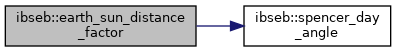
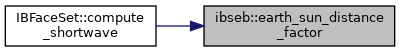
| AMREX_GPU_HOST_DEVICE AMREX_FORCE_INLINE amrex::Real ibseb::equation_of_time | ( | amrex::Real | day_of_year | ) |
Equation of time [minutes] from the day of year (Spencer 1971).
Referenced by solar_hour_angle().
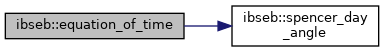
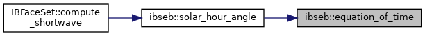
| AMREX_GPU_HOST_DEVICE AMREX_FORCE_INLINE void ibseb::hemisphere_direction | ( | int | dir, |
| int | nsign, | ||
| int | ia, | ||
| int | ie, | ||
| int | n_az, | ||
| int | n_el, | ||
| amrex::Real & | sx, | ||
| amrex::Real & | sy, | ||
| amrex::Real & | sz | ||
| ) |
Direction of the (ia, ie) sample of a cosine-weighted hemisphere around the outward normal of a face with direction dir and normal sign nsign (+1 along the axis, -1 against it). Stratified in the azimuth phi = 2 pi (ia + 1/2) / n_az and in u = (ie + 1/2) / n_el with theta = asin(sqrt(u)) from the normal, so every sample carries the same weight and the counts are view factors.
Referenced by IBFaceSet::compute_view_fractions().
|
inline |
Sine of the elevation of the shallowest ray of the hemisphere sampling (hemisphere_direction()) with n_az azimuths and n_el elevations: on a roof the ray furthest from the normal, cos(theta_max); on a wall, where a ray's sine of elevation is sin(theta) sin(phi), the ray nearest the normal at the azimuth nearest the horizontal, sin(theta_min) sin(pi / n_az). With an odd n_az a wall has level rays (phi = pi), which the walk follows for two rounds of the map.
Referenced by IBFaceSet::build_ray_map().
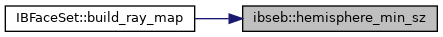
| AMREX_GPU_HOST_DEVICE AMREX_FORCE_INLINE amrex::Real ibseb::orbital_hour_angle | ( | double | calday, |
| amrex::Real | longitude_rad | ||
| ) |
Hour angle [rad] of the orbital formula the radiation models use (orbital_cos_zenith_instant() of ERF_OrbCosZenith.H): its cos z = sin(lat) sin(decl) - cos(lat) cos(decl) cos(2 pi frac(calday) + lon) is the usual form with the hour angle 2 pi frac(calday) + lon - pi. The fraction of the calendar day is the UTC time of day and there is no equation of time, so local solar time is UTC plus one hour per 15 degrees of longitude. Wrapped to [-pi, pi), negative in the morning.
Referenced by ERF::ibseb_set_two_stream_sun().
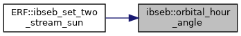
| AMREX_GPU_HOST_DEVICE AMREX_FORCE_INLINE bool ibseb::ray_blocked | ( | amrex::Real | x0, |
| amrex::Real | y0, | ||
| amrex::Real | z0, | ||
| amrex::Real | sx, | ||
| amrex::Real | sy, | ||
| amrex::Real | sz, | ||
| const RayMap & | m | ||
| ) |
Whether the ray from a face toward the sun hits a building.
Buildings are the column tops of the rank's ray map (RayMap), so a ray is blocked wherever its height on entering a column is below that column's top: buildings stand on the ground, so the lowest point of the ray inside a column is at its entry, and the height only grows along a ray toward a sun above the horizon. The walk over the columns is a 2D digital differential analyser. It stops when the ray rises above the tallest column or leaves the map (the far field is open ground; in a periodic direction the map spans, the ray wraps round instead).
The start point is nudged a little along the ray so a face does not test its own column at its own height: a wall starts in its fluid cell's column, whose top is below the face (no overhangs), and a roof starts a hair above its own top.
Referenced by IBFaceSet::compute_shortwave(), and IBFaceSet::compute_shortwave_two_stream().
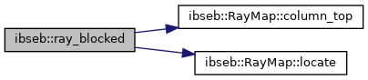
|
inline |
Halo of a ray map, in cells: how far a ray no shallower than sz_min (the sine of its elevation) can travel horizontally before it rises above height or falls that far, height / tan(elevation), rounded up and with one cell for the column it starts in. At least one cell, so a face always finds the column of its solid neighbour; a level ray would reach for ever, which the caller caps at the domain.
Referenced by IBFaceSet::build_ray_map().
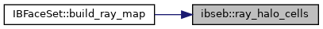
| AMREX_GPU_HOST_DEVICE AMREX_FORCE_INLINE int ibseb::ray_hit | ( | amrex::Real | x0, |
| amrex::Real | y0, | ||
| amrex::Real | z0, | ||
| amrex::Real | sx, | ||
| amrex::Real | sy, | ||
| amrex::Real | sz, | ||
| const RayMap & | m | ||
| ) |
Where a ray from a face ends: sky, ground or a building, for any direction (the hemisphere sampling of the view fractions). The same column walk as ray_blocked(), with the height test made direction-aware:
sz >= 0) are blocked by a column whose top is above the entry height; a level ray that leaves the map, or has crossed the domain twice where the map wraps, ends at the horizon, which counts as sky;sz < 0) are blocked by a solid column whose top is above the exit height (the ray descends inside the column) and reach the ground where the exit height is at or below z_ground.Solid columns are those with a top above the ground. Leaving the map counts as sky for a rising ray and as ground for a falling one: the far field is open ground. Where the map spans a periodic direction the ray wraps round instead.
Referenced by IBFaceSet::compute_view_fractions().
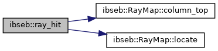
| AMREX_GPU_HOST_DEVICE AMREX_FORCE_INLINE void ibseb::slab_skin_response | ( | const amrex::Real * | T, |
| amrex::Real | T_int, | ||
| amrex::Real | k, | ||
| amrex::Real | rho_cp, | ||
| amrex::Real | dz, | ||
| amrex::Real | dt, | ||
| int | N, | ||
| amrex::Real & | a, | ||
| amrex::Real & | b | ||
| ) |
Linear response of the implicit slab step to the skin temperature.
The step of advance_slab_dirichlet() is linear in T_skin, so the conduction it returns is G = a T_skin - b for the slab's current state, interior temperature and time step. The two coefficients come from two trial steps on copies of the column (T_skin = 0 and T_skin = 1), the same arithmetic as the real step, so a balance solved with this response and then advanced with the resulting skin temperature closes to rounding. The column itself is not modified.
| [in] | T | Layer temperatures [K] at the start of the step. |
| [out] | a | Slope of G with respect to T_skin [W/m2/K], positive. |
| [out] | b | Offset: G at T_skin = 0 is -b [W/m2]. Other arguments as in advance_slab_dirichlet(). |
Referenced by IBFaceSet::solve_balance().
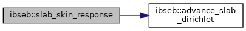
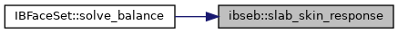
| AMREX_GPU_HOST_DEVICE AMREX_FORCE_INLINE amrex::Real ibseb::solar_azimuth | ( | amrex::Real | latitude_deg, |
| amrex::Real | decl, | ||
| amrex::Real | hour_angle, | ||
| amrex::Real | zenith | ||
| ) |
Azimuth [rad] clockwise from north (east is pi/2) from the latitude, declination, hour angle and zenith; north when the sun is at the zenith or the site is at a pole, where the azimuth is undefined.
Referenced by IBFaceSet::compute_shortwave().
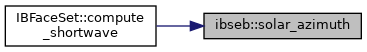
| AMREX_GPU_HOST_DEVICE AMREX_FORCE_INLINE amrex::Real ibseb::solar_declination | ( | amrex::Real | day_of_year | ) |
Solar declination [rad] from the day of year (Spencer 1971).
Referenced by IBFaceSet::compute_shortwave().
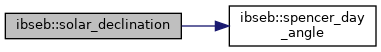
| AMREX_GPU_HOST_DEVICE AMREX_FORCE_INLINE amrex::Real ibseb::solar_hour_angle | ( | amrex::Real | time_utc_s, |
| amrex::Real | longitude_deg, | ||
| amrex::Real | day_of_year | ||
| ) |
Hour angle [rad] from the UTC time of day and the site: solar time is UTC plus one hour per 15 degrees of longitude (east positive) plus the equation of time, and the hour angle is 15 degrees per hour from solar noon, negative in the morning. The time zone plays no part (it would cancel).
Referenced by IBFaceSet::compute_shortwave().
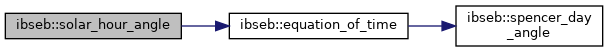
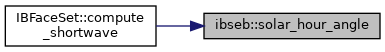
| AMREX_GPU_HOST_DEVICE AMREX_FORCE_INLINE amrex::Real ibseb::solar_zenith | ( | amrex::Real | latitude_deg, |
| amrex::Real | decl, | ||
| amrex::Real | hour_angle | ||
| ) |
Zenith angle [rad] from the latitude, declination and hour angle.
Referenced by IBFaceSet::compute_shortwave().
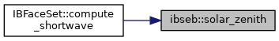
| AMREX_GPU_HOST_DEVICE AMREX_FORCE_INLINE amrex::Real ibseb::solve_skin_balance | ( | amrex::Real | T_start, |
| amrex::Real | SW_abs, | ||
| amrex::Real | Q_abs, | ||
| amrex::Real | LW_ext, | ||
| amrex::Real | emis, | ||
| amrex::Real | f_bldg, | ||
| amrex::Real | C_H, | ||
| amrex::Real | exner, | ||
| amrex::Real | theta_air, | ||
| amrex::Real | LE, | ||
| amrex::Real | slab_a, | ||
| amrex::Real | slab_b, | ||
| amrex::Real | T_min, | ||
| amrex::Real | T_max, | ||
| amrex::Real | max_step, | ||
| amrex::Real | tol, | ||
| int | max_iter, | ||
| int & | n_iter, | ||
| amrex::Real & | resid | ||
| ) |
Solve the face balance for the skin temperature.
| [in] | T_start | Starting guess, the skin temperature of the previous step [K]. |
| [in] | SW_abs | Absorbed shortwave [W/m2]. |
| [in] | Q_abs | Absorbed external flux eps Q_ext [W/m2]. |
| [in] | LW_ext | Incoming longwave from sky and ground [W/m2]. |
| [in] | emis | Face emissivity. |
| [in] | f_bldg | Building view fraction of the face. |
| [in] | C_H | Sensible coefficient rho c_p kappa u* / ln(delta/z0h) [W/m2/K]. |
| [in] | exner | Exner function of the fluid cell, T_a / theta_a. |
| [in] | theta_air | Potential temperature of the fluid cell [K]. |
| [in] | LE | Latent flux, frozen [W/m2]. |
| [in] | slab_a,slab_b | Slab response G = a T_s - b [W/m2/K], [W/m2]. |
| [in] | T_min,T_max | Bounds on the skin temperature [K]. |
| [in] | max_step | Largest Newton step [K]. |
| [in] | tol | Convergence: stop when a step changes T_s by less than this [K]. |
| [in] | max_iter | Iteration cap. |
| [out] | n_iter | Iterations taken. |
| [out] | resid | |F| at the returned temperature [W/m2]; non-zero when a bound was hit or the cap was reached. |
Referenced by IBFaceSet::solve_balance().
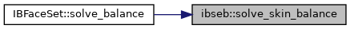
| AMREX_GPU_HOST_DEVICE AMREX_FORCE_INLINE amrex::Real ibseb::spencer_day_angle | ( | amrex::Real | day_of_year | ) |
Day angle [rad] of Spencer's (1971) series, 2 pi (day - 1) / 365. The series' coefficients were fitted with this day angle; the declination, the equation of time and the Earth-Sun distance below all use it, so day 366 gives the same values as day 1.
Referenced by earth_sun_distance_factor(), equation_of_time(), and solar_declination().
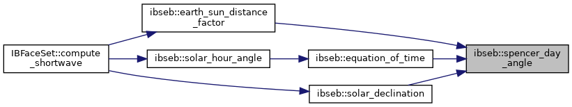
| AMREX_GPU_HOST_DEVICE AMREX_FORCE_INLINE void ibseb::sun_vector | ( | amrex::Real | zenith, |
| amrex::Real | azimuth, | ||
| amrex::Real & | sx, | ||
| amrex::Real & | sy, | ||
| amrex::Real & | sz | ||
| ) |
Unit vector toward the sun from zenith and azimuth (east +x, north +y).
Referenced by IBFaceSet::compute_shortwave().
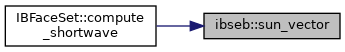
|
constexpr |
Stefan-Boltzmann constant [W/m2/K4].
Referenced by IBFaceSet::compute_longwave(), IBFaceSet::compute_longwave_two_stream(), IBFaceSet::solve_balance(), and solve_skin_balance().
|
constexpr |
Largest number of layers the stack arrays allow. The kernels keep three such arrays per thread, so the bound is kept small for GPU occupancy; 32 layers resolve any wall (erf.ibseb.n_slab_layers is checked against it).
Referenced by advance_slab_dirichlet(), IBFaceSet::compute_ground(), slab_skin_response(), and IBFaceSet::solve_balance().